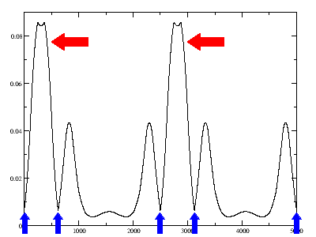

This lesson covers some of the features available in the program cut3d. The help file of this program can be view at cut3d help file.
The cut3d program can produce output that can be read by several other programs. At present, at least XCrySDen (www.xcrysden.org, freely available) is known to support this output.
The cut3d program can be used to treat data in a density file (_DEN), a potential file (_POT) or a wavefunction file (_WFK). In this lesson will we see how to use this program to obtain the value of the density on a line.
This lesson should take about 15 minutes.
We will first start by a simple example: viewing Silicon density information. Before using the cut3d program, we first have to generate the density and the wavefunctions files by running the Abinit program. For this simple case, we will use the last input file used in lesson 3 (tbase3_5.in). That input file contains two datasets, one to obtain a self-consistent density and the other to obtain a selected number of k-point wavefunctions. If you do not have the output of this case, you will need to rerun it, at this stage, this should be fairly easy for you!
The output files that are of interest for us now are:
tbase3_5o_DS1_DEN tbase3_5o_DS1_WFK tbase3_5o_DS2_WFK
NOTE: To ask Abinit to output the density, you have to set the input parameter "prtden 1" in the input file as it was done in the first dataset in this example.
NOTE: In DS1, the self-consistent dataset, we have a good density (file: tbase3_5o_DS1_DEN) which is physically relevant. Careful, if you run a non-self-consistent job, you may obtain a density but it will not be physical!
NOTE: The wavefunctions in DS1 (file: tbase3_5o_DS1_WFK) are those of the Monkhorst and Pack grid which are good for self-consistent calculations but often not really inspiring physically. For this reason, we often have to do a non-self-consistent run to get relevant wavefunctions as it is done in this case. The DS2 (file: tbase3_5o_DS2_WFK) contains the interesting wavefunctions that we want to analyse.
Now we are ready to use the cut3d program. First we must make sure that we have compiled the program. If you have run the command "make" in the Abinit main directory, and everything went well, then you have obtained the abinit program and all the accompanying program, in particular cut3d. You can obtain only the cut3d program by issuing the command "make cut3d" in the Abinit main directory.
Assuming that we are in the directory Tutorial/Work_tools, and the cut3d program can be accessed by simply typing its name, now write the command:
promp% cut3d
The cut3d program will ask you several questions in order to determine what you want him to do. In this lesson, the text coming from the cut3d program are in black and the input that you have to type in are in red.
After some text about the version and the licence, you will see the question:
What is the name of the 3D function (density, potential or wavef) file ?
You can enter the density file:
tbase3_5o_DS1_DEN
You will then see:
=> Your 3D function file is : tbase3_5o_DS1_DEN Does this file contain formatted 3D ASCII data (=0) or unformatted binary header + 3D data (=1) ?
Your answer is 1 as generally all output of Abinit are in unformatted binary form. After you have pressed enter, cut3d prints out a lot of information contained in this file that explain how that density was obtained. At this point, you can double check that this is really the file that you want to analyse. Then you will have the choices:
What is your choice ? Type: 1 => point (interpolation of data for a single point) 2 => line (interpolation of data along a line) 3 => plane (interpolation of data in a plane) 4 => volume (interpolation of data in a volume) 5 => 3D formatted data (output the bare 3D data - one column) 6 => 3D indexed data (bare 3D data, preceeded by 3D index) 7 => 3D Molekel formatted data 8 => 3D data with coordinates (tecplot ASCII format) 9 => output .xsf file for XCrysDen 10 => output .dx file for OpenDx 11 => compute atomic charge using the Hirshfeld method 12 => NetCDF file 13 => exit
As you can see, there are many options available! At the moment, we will do something simple which is getting the density along a given line.
Choose option 2. You will be given the following choices:
Type 1) for a line between two cartesian-defined points or 2) for a line between two crystallographic-defined points or 3) for a line defined by its direction
Select option 1. You will get the message:
Type the first point coordinates (Bohrs): -> X-dir Y-dir Z-dir:
We will ask for the density along the [111] direction starting from the origin and extending to two unit cell. For the first point, enter 0 0 0. You will get the message:
Type the second point coordinates (Bohrs): -> X-dir Y-dir Z-dir:
Looking at the input file, we see that the cubic side has a length of 10.217 bohr. To get 2 unit cells, you will enter 20.434 20.434 20.434. You will then be asked for the line resolution.
Enter line resolution:
This is how many points are calculated for the line. Typically, you should enter a large number, say 5000. You will then be asked for the file name.
Enter the name of an output file:
Enter something meaningful, si_den_111.dat.
More analysis of the 3D file ? (1=default=yes,2=no)
Enter 2 to finish with cut3d. If you do a list of the files in your working directory, you should see the "si_den_111.dat" file. You can look at this file, you will see that this is a simple two columns file. You can visualize it with your favorite plotting software (ex: xmgrace, gnuplot, ...). If you open this file with xmgrace, you will obtain the following graph:

We can learn quite a lot from this graph. Looking at the input file, we see that we have a silicon atom at the origin and another 1/4 along the diagonal. We note also that there is almost no density at the origin. By doing the line in the [111] direction, we have crossed the first silicon-silicon bond which we can see as a large density peak indicated by the red arrows.
By the way, cut3d works with the so-called "trilinear" interpolation of the density. That is, the FFT grid, on which the density is defined, in real space, leads to a partitioning of the space in small rectangular parallelepipeds, and in each such parallelepiped, the eight values of the density on the corner are used to define an interpolation that is linear in each the dimensions of the cube. More explicitly, let us chose one of the corner as origin, and define reduced coordinates, varying from 0 to 1 inside the parallelepiped, the density inside the parallelepiped is given by
density(dx,dy,dz)=density(0,0,0)+ c100 * dx + c010 * dy + c001 * dz + c110 * dx * dy + c101 * dx * dz + c011 * dy * dz + c111 * dx * dy * dzwhere the 7 coefficients c100, c010, c001, c110, c101, c011, c111 are to be determined from the knowledge of the density at the 7 other corners.
This trilinear interpolation guarantees that the overall function of space is continuous, but do not guarantee that the derivatives change continuously. This is seen in the above figure, as the two abrupt changes of slopes, close to the maximum. These are completely spurious features, that can be avoided is a finer FFT grid is used to determine the density. Actually, the density profile along the bond, with a fine FFT grid, behave quite smoothly, and reach its maximum at the mid point between the two atoms, in contrast to the figure presented previously.
NOTE: An important point to remember when doing visualization of density obtained with a pseudopotential calculation is that the core charge is not included! This is the reason why we use pseudopotential and the charge we get is only the valence charge. It is possible to include some of the core charge by doing calculations using pseudos with partial core charge. The fact that the core charge is missing means that there is no charge at the nucleus of our atoms. This means that we are getting low density at the nucleus center and we have to remember that this is not a physical effect! The location of the silicon atoms have been indicating by blue arrows.